Search 1121 animals
Pick an animal to see the plants it feeds on, lays eggs on or shelters in. Every one is a documented record with a source.
23 more animals are in the catalogue with no plant relationship recorded yet, so they have no page. An empty page would say more about our coverage than about the animal.
 Amy Schnebelin, some rights reserved (CC BY), uploaded by Amy Schnebelin") A Digger BeeAnthophora terminalis
A Digger BeeAnthophora terminalis Owen Strickland, some rights reserved (CC BY), uploaded by Owen Strickland") A Leafcutter BeeMegachile relativaAgapostemon femoratusAgapostemon femoratusAgapostemon splendensAgapostemon splendensAgapostemon texanusAgapostemon texanusAlkali BeeNomia melanderiAmerican Bumble BeeBombus pensylvanicusAmerican Cuckoo Nomad BeeEpeolus americanusAmerican Sand WaspBembix americanaAmmophila abertiAmmophila abertiAmmophila proceraAmmophila proceraAndrena amphibolaAndrena amphibolaAndrena angustitarsataAndrena angustitarsataAndrena astragaliAndrena astragaliAndrena auricomaAndrena auricomaAndrena birtwelliAndrena birtwelliAndrena caeruleaAndrena caeruleaAndrena canadensisAndrena canadensisAndrena candidaAndrena candidaAndrena carliniAndrena carliniAndrena carolinaAndrena carolinaAndrena clarkellaAndrena clarkellaAndrena columbianaAndrena columbianaAndrena crataegiAndrena crataegiAndrena cressoniiAndrena cressoniiAndrena cyanophilaAndrena cyanophilaAndrena erythrogasterAndrena erythrogasterAndrena forbesiiAndrena forbesiiAndrena frigidaAndrena frigidaAndrena helianthiAndrena helianthiAndrena hippotesAndrena hippotesAndrena hirticinctaAndrena hirticinctaAndrena knuthianaAndrena knuthianaAndrena lawrenceiAndrena lawrenceiAndrena lupinorumAndrena lupinorumAndrena mariaeAndrena mariaeAndrena medionitensAndrena medionitensAndrena melanochroaAndrena melanochroaAndrena merriamiAndrena merriamiAndrena microchloraAndrena microchloraAndrena milwaukeensisAndrena milwaukeensisAndrena mirandaAndrena mirandaAndrena miserabilisAndrena miserabilisAndrena nigrihirtaAndrena nigrihirtaAndrena nigrocaeruleaAndrena nigrocaeruleaAndrena nivalisAndrena nivalisAndrena pallidifoveaAndrena pallidifoveaAndrena persimulataAndrena persimulataAndrena porteraeAndrena porteraeAndrena prunorumAndrena prunorumAndrena robervalensisAndrena robervalensisAndrena rufosignataAndrena rufosignataAndrena saliciflorisAndrena saliciflorisAndrena salictariaAndrena salictariaAndrena schuhiAndrena schuhiAndrena scurraAndrena scurraAndrena sigmundiAndrena sigmundiAndrena sladeniAndrena sladeniAndrena solaAndrena solaAndrena subtilisAndrena subtilisAndrena surdaAndrena surdaAndrena thaspiiAndrena thaspiiAndrena topazanaAndrena topazanaAndrena transnigraAndrena transnigraAndrena trevorisAndrena trevorisAndrena vicinaAndrena vicinaAndrena w-scriptaAndrena w-scriptaAndrena wheeleriAndrena wheeleriAnthidiellum robertsoniAnthidiellum robertsoniAnthidium atrifronsAnthidium atrifronsAnthidium mormonumAnthidium mormonumAnthidium tenuifloraeAnthidium tenuifloraeAnthidium utahenseAnthidium utahenseAnthophora pacificaAnthophora pacificaAnthophora urbanaAnthophora urbanaAnthophora walshiiAnthophora walshiiAphilanthops frigidusAphilanthops frigidusArticulated Cuckoo Nomad BeeNomada articulataAugochlorella aurataAugochlorella aurataBear-like Digger BeeAnthophora ursinaBembix amoenaBembix amoena
A Leafcutter BeeMegachile relativaAgapostemon femoratusAgapostemon femoratusAgapostemon splendensAgapostemon splendensAgapostemon texanusAgapostemon texanusAlkali BeeNomia melanderiAmerican Bumble BeeBombus pensylvanicusAmerican Cuckoo Nomad BeeEpeolus americanusAmerican Sand WaspBembix americanaAmmophila abertiAmmophila abertiAmmophila proceraAmmophila proceraAndrena amphibolaAndrena amphibolaAndrena angustitarsataAndrena angustitarsataAndrena astragaliAndrena astragaliAndrena auricomaAndrena auricomaAndrena birtwelliAndrena birtwelliAndrena caeruleaAndrena caeruleaAndrena canadensisAndrena canadensisAndrena candidaAndrena candidaAndrena carliniAndrena carliniAndrena carolinaAndrena carolinaAndrena clarkellaAndrena clarkellaAndrena columbianaAndrena columbianaAndrena crataegiAndrena crataegiAndrena cressoniiAndrena cressoniiAndrena cyanophilaAndrena cyanophilaAndrena erythrogasterAndrena erythrogasterAndrena forbesiiAndrena forbesiiAndrena frigidaAndrena frigidaAndrena helianthiAndrena helianthiAndrena hippotesAndrena hippotesAndrena hirticinctaAndrena hirticinctaAndrena knuthianaAndrena knuthianaAndrena lawrenceiAndrena lawrenceiAndrena lupinorumAndrena lupinorumAndrena mariaeAndrena mariaeAndrena medionitensAndrena medionitensAndrena melanochroaAndrena melanochroaAndrena merriamiAndrena merriamiAndrena microchloraAndrena microchloraAndrena milwaukeensisAndrena milwaukeensisAndrena mirandaAndrena mirandaAndrena miserabilisAndrena miserabilisAndrena nigrihirtaAndrena nigrihirtaAndrena nigrocaeruleaAndrena nigrocaeruleaAndrena nivalisAndrena nivalisAndrena pallidifoveaAndrena pallidifoveaAndrena persimulataAndrena persimulataAndrena porteraeAndrena porteraeAndrena prunorumAndrena prunorumAndrena robervalensisAndrena robervalensisAndrena rufosignataAndrena rufosignataAndrena saliciflorisAndrena saliciflorisAndrena salictariaAndrena salictariaAndrena schuhiAndrena schuhiAndrena scurraAndrena scurraAndrena sigmundiAndrena sigmundiAndrena sladeniAndrena sladeniAndrena solaAndrena solaAndrena subtilisAndrena subtilisAndrena surdaAndrena surdaAndrena thaspiiAndrena thaspiiAndrena topazanaAndrena topazanaAndrena transnigraAndrena transnigraAndrena trevorisAndrena trevorisAndrena vicinaAndrena vicinaAndrena w-scriptaAndrena w-scriptaAndrena wheeleriAndrena wheeleriAnthidiellum robertsoniAnthidiellum robertsoniAnthidium atrifronsAnthidium atrifronsAnthidium mormonumAnthidium mormonumAnthidium tenuifloraeAnthidium tenuifloraeAnthidium utahenseAnthidium utahenseAnthophora pacificaAnthophora pacificaAnthophora urbanaAnthophora urbanaAnthophora walshiiAnthophora walshiiAphilanthops frigidusAphilanthops frigidusArticulated Cuckoo Nomad BeeNomada articulataAugochlorella aurataAugochlorella aurataBear-like Digger BeeAnthophora ursinaBembix amoenaBembix amoena Christina Butler, some rights reserved (CC BY)") Bicoloured Sweat BeeAgapostemon virescensBicyrtes ventralisBicyrtes ventralisBlack-tailed Bumble BeeBombus melanopygus
Bicoloured Sweat BeeAgapostemon virescensBicyrtes ventralisBicyrtes ventralisBlack-tailed Bumble BeeBombus melanopygus Harley Hosford, some rights reserved (CC BY), uploaded by Harley Hosford") Blue Orchard Mason BeeOsmia lignariaBrown-belted Bumble BeeBombus griseocollisBrown-tailed Bumble BeeBombus mixtusBumblebee-like Digger BeeAnthophora bomboidesBumblebeesBombus spp.Calliopsis andreniformisCalliopsis andreniformisCalliopsis coloradensisCalliopsis coloradensisCentral Bumble BeeBombus centralisCeratina acanthaCeratina acanthaCeratina calcarataCeratina calcarataCerceris desertaCerceris desertaCerceris nigrescensCerceris nigrescensCerceris sextaCerceris sextaCoelioxys editaCoelioxys editaCoelioxys funerariusCoelioxys funerariusCoelioxys grindeliaeCoelioxys grindeliaeCoelioxys octodentatusCoelioxys octodentatusCoelioxys porteraeCoelioxys porteraeCoelioxys rufitarsisCoelioxys rufitarsisCoelioxys sodalisCoelioxys sodalisColletes compactusColletes compactusColletes consorsColletes consorsColletes fulgidusColletes fulgidusColletes gypsicolensColletes gypsicolensColletes kincaidiiColletes kincaidiiColletes phaceliaeColletes phaceliaeColletes simulansColletes simulansCompact Cuckoo Nomad BeeEpeolus compactusConcave Cuckoo Nomad BeeTriepeolus concavusConfusing Bumble BeeBombus perplexusCryptic Bumble BeeBombus cryptarumDianthidium curvatumDianthidium curvatumDianthidium pudicumDianthidium pudicumDianthidium subparvumDianthidium subparvumDianthidium ulkeiDianthidium ulkeiDiminutive Chimney BeeDiadasia diminutaDufourea marginataDufourea marginataDufourea trochanteraDufourea trochanteraEctemnius arcuatusEctemnius arcuatusEctemnius continuusEctemnius continuusEctemnius dilectusEctemnius dilectusEctemnius lapidariusEctemnius lapidariusEctemnius maculosusEctemnius maculosusEctemnius ruficornisEctemnius ruficornisEctemnius rufifemurEctemnius rufifemurEctemnius spiniferusEctemnius spiniferusEpeolus olympiellusEpeolus olympiellusEucera acerbaEucera acerbaEucera atriventrisEucera atriventrisEucera douglasianaEucera douglasianaEucera edwardsiiEucera edwardsiiEucera fraterEucera fraterEucera hamataEucera hamataEucerceris cressoniEucerceris cressoniFrigid Bumble BeeBombus frigidusGolden Northern Bumble BeeBombus fervidusGorytes simillimusGorytes simillimusGreat Golden Digger WaspSphex ichneumoneusHabropoda cinerariaHabropoda cinerariaHalf-black Bumble BeeBombus vagansHalictus confususHalictus confususHalictus farinosusHalictus farinosusHalictus ligatusHalictus ligatusHalictus tripartitusHalictus tripartitusHalictus virgatellusHalictus virgatellusHeriades carinataHeriades carinataHeriades cressoniHeriades cressoniHeriades variolosaHeriades variolosaHigh Country Bumble BeeBombus kirbiellusHolcopasites calliopsidisHolcopasites calliopsidisHoplitis albifronsHoplitis albifronsHoplitis fulgidaHoplitis fulgidaHoplitis grinnelliHoplitis grinnelliHoplitis hypocritaHoplitis hypocritaHoplitis pilosifronsHoplitis pilosifronsHoplitis productaHoplitis productaHoplitis robustaHoplitis robustaHoplitis sambuciHoplitis sambuciHoplitis spoliataHoplitis spoliataHoplitis truncataHoplitis truncata
Blue Orchard Mason BeeOsmia lignariaBrown-belted Bumble BeeBombus griseocollisBrown-tailed Bumble BeeBombus mixtusBumblebee-like Digger BeeAnthophora bomboidesBumblebeesBombus spp.Calliopsis andreniformisCalliopsis andreniformisCalliopsis coloradensisCalliopsis coloradensisCentral Bumble BeeBombus centralisCeratina acanthaCeratina acanthaCeratina calcarataCeratina calcarataCerceris desertaCerceris desertaCerceris nigrescensCerceris nigrescensCerceris sextaCerceris sextaCoelioxys editaCoelioxys editaCoelioxys funerariusCoelioxys funerariusCoelioxys grindeliaeCoelioxys grindeliaeCoelioxys octodentatusCoelioxys octodentatusCoelioxys porteraeCoelioxys porteraeCoelioxys rufitarsisCoelioxys rufitarsisCoelioxys sodalisCoelioxys sodalisColletes compactusColletes compactusColletes consorsColletes consorsColletes fulgidusColletes fulgidusColletes gypsicolensColletes gypsicolensColletes kincaidiiColletes kincaidiiColletes phaceliaeColletes phaceliaeColletes simulansColletes simulansCompact Cuckoo Nomad BeeEpeolus compactusConcave Cuckoo Nomad BeeTriepeolus concavusConfusing Bumble BeeBombus perplexusCryptic Bumble BeeBombus cryptarumDianthidium curvatumDianthidium curvatumDianthidium pudicumDianthidium pudicumDianthidium subparvumDianthidium subparvumDianthidium ulkeiDianthidium ulkeiDiminutive Chimney BeeDiadasia diminutaDufourea marginataDufourea marginataDufourea trochanteraDufourea trochanteraEctemnius arcuatusEctemnius arcuatusEctemnius continuusEctemnius continuusEctemnius dilectusEctemnius dilectusEctemnius lapidariusEctemnius lapidariusEctemnius maculosusEctemnius maculosusEctemnius ruficornisEctemnius ruficornisEctemnius rufifemurEctemnius rufifemurEctemnius spiniferusEctemnius spiniferusEpeolus olympiellusEpeolus olympiellusEucera acerbaEucera acerbaEucera atriventrisEucera atriventrisEucera douglasianaEucera douglasianaEucera edwardsiiEucera edwardsiiEucera fraterEucera fraterEucera hamataEucera hamataEucerceris cressoniEucerceris cressoniFrigid Bumble BeeBombus frigidusGolden Northern Bumble BeeBombus fervidusGorytes simillimusGorytes simillimusGreat Golden Digger WaspSphex ichneumoneusHabropoda cinerariaHabropoda cinerariaHalf-black Bumble BeeBombus vagansHalictus confususHalictus confususHalictus farinosusHalictus farinosusHalictus ligatusHalictus ligatusHalictus tripartitusHalictus tripartitusHalictus virgatellusHalictus virgatellusHeriades carinataHeriades carinataHeriades cressoniHeriades cressoniHeriades variolosaHeriades variolosaHigh Country Bumble BeeBombus kirbiellusHolcopasites calliopsidisHolcopasites calliopsidisHoplitis albifronsHoplitis albifronsHoplitis fulgidaHoplitis fulgidaHoplitis grinnelliHoplitis grinnelliHoplitis hypocritaHoplitis hypocritaHoplitis pilosifronsHoplitis pilosifronsHoplitis productaHoplitis productaHoplitis robustaHoplitis robustaHoplitis sambuciHoplitis sambuciHoplitis spoliataHoplitis spoliataHoplitis truncataHoplitis truncata Hunt's Bumble BeeBombus huntiiHylaeus affinisHylaeus affinisHylaeus annulatusHylaeus annulatusHylaeus basalisHylaeus basalisHylaeus leptocephalusHylaeus leptocephalusHylaeus mesillaeHylaeus mesillaeHylaeus modestusHylaeus modestusHylaeus verticalisHylaeus verticalisIndiscriminate Cuckoo Bumble BeeBombus insularisIsodontia elegansIsodontia elegansIsodontia mexicanaIsodontia mexicanaLasioglossum acuminatumLasioglossum acuminatumLasioglossum aff.nevadenseLasioglossum aff.nevadenseLasioglossum albipenneLasioglossum albipenneLasioglossum albohirtumLasioglossum albohirtumLasioglossum anhypopsLasioglossum anhypopsLasioglossum athabascenseLasioglossum athabascenseLasioglossum brunneiventreLasioglossum brunneiventreLasioglossum buccaleLasioglossum buccaleLasioglossum colatumLasioglossum colatumLasioglossum cooleyiLasioglossum cooleyiLasioglossum coriaceumLasioglossum coriaceumLasioglossum cressoniiLasioglossum cressoniiLasioglossum dashwoodiLasioglossum dashwoodiLasioglossum egregiumLasioglossum egregiumLasioglossum glabriventreLasioglossum glabriventreLasioglossum incompletumLasioglossum incompletumLasioglossum inconditumLasioglossum inconditumLasioglossum kincaidiiLasioglossum kincaidiiLasioglossum knereriLasioglossum knereriLasioglossum laevissimumLasioglossum laevissimumLasioglossum lineatulumLasioglossum lineatulumLasioglossum macroprosopumLasioglossum macroprosopumLasioglossum marinenseLasioglossum marinenseLasioglossum mellipesLasioglossum mellipesLasioglossum nevadenseLasioglossum nevadenseLasioglossum nigrovirideLasioglossum nigrovirideLasioglossum novascotiaeLasioglossum novascotiaeLasioglossum nr.pavoninumLasioglossum nr.pavoninumLasioglossum obnubilumLasioglossum obnubilumLasioglossum occidentaleLasioglossum occidentaleLasioglossum ovalicepsLasioglossum ovalicepsLasioglossum pacatumLasioglossum pacatumLasioglossum paraforbesiiLasioglossum paraforbesiiLasioglossum pectoraleLasioglossum pectoraleLasioglossum pilosumLasioglossum pilosumLasioglossum prasinogasterLasioglossum prasinogasterLasioglossum pruinosumLasioglossum pruinosumLasioglossum punctatoventreLasioglossum punctatoventreLasioglossum quebecenseLasioglossum quebecenseLasioglossum ruidosenseLasioglossum ruidosenseLasioglossum sandhousiellumLasioglossum sandhousiellumLasioglossum sediLasioglossum sediLasioglossum semicaeruleumLasioglossum semicaeruleumLasioglossum sisymbriiLasioglossum sisymbriiLasioglossum succinipenneLasioglossum succinipenneLasioglossum trizonatumLasioglossum trizonatumLasioglossum versansLasioglossum versansLasioglossum zephyrumLasioglossum zephyrumLeafcutter BeesMegachile spp.Lindenius columbianusLindenius columbianusLiris argentatusLiris argentatusLyroda subitaLyroda subitaMacropis nudaMacropis nudaMason BeesOsmia spp.Megachile angelarumMegachile angelarumMegachile apicalisMegachile apicalisMegachile brevisMegachile brevisMegachile centuncularisMegachile centuncularisMegachile fidelisMegachile fidelisMegachile frigidaMegachile frigidaMegachile gemulaMegachile gemulaMegachile inermisMegachile inermisMegachile lapponicaMegachile lapponicaMegachile latimanusMegachile latimanusMegachile melanophaeaMegachile melanophaeaMegachile montivagaMegachile montivagaMegachile nivalisMegachile nivalisMegachile onobrychidisMegachile onobrychidisMegachile parallelaMegachile parallelaMegachile perihirtaMegachile perihirtaMegachile pugnataMegachile pugnataMegachile rotundataMegachile rotundataMegachile subnigraMegachile subnigraMegachile texanaMegachile texanaMegachile wheeleriMegachile wheeleriMelecta thoracicaMelecta thoracicaMelissodes agilisMelissodes agilisMelissodes bimaculatusMelissodes bimaculatusMelissodes bimatrisMelissodes bimatrisMelissodes communisMelissodes communisMelissodes druriellusMelissodes druriellusMelissodes lupinusMelissodes lupinusMelissodes menuachusMelissodes menuachusMelissodes microstictusMelissodes microstictusMelissodes pallidisignatusMelissodes pallidisignatusMelissodes rivalisMelissodes rivalisMelissodes trinodisMelissodes trinodisMelissodes utahensisMelissodes utahensisMinimal Cuckoo Nomad BeeEpeolus minimusMining Bees ★Andrena spp.Mountain Bumble BeeBombus balteatusNevada Bumble BeeBombus nevadensisNomada crotchiiNomada crotchiiNomada cuneataNomada cuneataNomada texanaNomada texanaNorthern Amber Bumble BeeBombus borealisNorthern Bumble BeeBombus polarisNysson plagiatusNysson plagiatusOccidental Digger BeeAnthophora occidentalisOchre-footed Long-horned BeeEucera fulvitarsisOrange-banded Bumble BeeBombus appositus
Hunt's Bumble BeeBombus huntiiHylaeus affinisHylaeus affinisHylaeus annulatusHylaeus annulatusHylaeus basalisHylaeus basalisHylaeus leptocephalusHylaeus leptocephalusHylaeus mesillaeHylaeus mesillaeHylaeus modestusHylaeus modestusHylaeus verticalisHylaeus verticalisIndiscriminate Cuckoo Bumble BeeBombus insularisIsodontia elegansIsodontia elegansIsodontia mexicanaIsodontia mexicanaLasioglossum acuminatumLasioglossum acuminatumLasioglossum aff.nevadenseLasioglossum aff.nevadenseLasioglossum albipenneLasioglossum albipenneLasioglossum albohirtumLasioglossum albohirtumLasioglossum anhypopsLasioglossum anhypopsLasioglossum athabascenseLasioglossum athabascenseLasioglossum brunneiventreLasioglossum brunneiventreLasioglossum buccaleLasioglossum buccaleLasioglossum colatumLasioglossum colatumLasioglossum cooleyiLasioglossum cooleyiLasioglossum coriaceumLasioglossum coriaceumLasioglossum cressoniiLasioglossum cressoniiLasioglossum dashwoodiLasioglossum dashwoodiLasioglossum egregiumLasioglossum egregiumLasioglossum glabriventreLasioglossum glabriventreLasioglossum incompletumLasioglossum incompletumLasioglossum inconditumLasioglossum inconditumLasioglossum kincaidiiLasioglossum kincaidiiLasioglossum knereriLasioglossum knereriLasioglossum laevissimumLasioglossum laevissimumLasioglossum lineatulumLasioglossum lineatulumLasioglossum macroprosopumLasioglossum macroprosopumLasioglossum marinenseLasioglossum marinenseLasioglossum mellipesLasioglossum mellipesLasioglossum nevadenseLasioglossum nevadenseLasioglossum nigrovirideLasioglossum nigrovirideLasioglossum novascotiaeLasioglossum novascotiaeLasioglossum nr.pavoninumLasioglossum nr.pavoninumLasioglossum obnubilumLasioglossum obnubilumLasioglossum occidentaleLasioglossum occidentaleLasioglossum ovalicepsLasioglossum ovalicepsLasioglossum pacatumLasioglossum pacatumLasioglossum paraforbesiiLasioglossum paraforbesiiLasioglossum pectoraleLasioglossum pectoraleLasioglossum pilosumLasioglossum pilosumLasioglossum prasinogasterLasioglossum prasinogasterLasioglossum pruinosumLasioglossum pruinosumLasioglossum punctatoventreLasioglossum punctatoventreLasioglossum quebecenseLasioglossum quebecenseLasioglossum ruidosenseLasioglossum ruidosenseLasioglossum sandhousiellumLasioglossum sandhousiellumLasioglossum sediLasioglossum sediLasioglossum semicaeruleumLasioglossum semicaeruleumLasioglossum sisymbriiLasioglossum sisymbriiLasioglossum succinipenneLasioglossum succinipenneLasioglossum trizonatumLasioglossum trizonatumLasioglossum versansLasioglossum versansLasioglossum zephyrumLasioglossum zephyrumLeafcutter BeesMegachile spp.Lindenius columbianusLindenius columbianusLiris argentatusLiris argentatusLyroda subitaLyroda subitaMacropis nudaMacropis nudaMason BeesOsmia spp.Megachile angelarumMegachile angelarumMegachile apicalisMegachile apicalisMegachile brevisMegachile brevisMegachile centuncularisMegachile centuncularisMegachile fidelisMegachile fidelisMegachile frigidaMegachile frigidaMegachile gemulaMegachile gemulaMegachile inermisMegachile inermisMegachile lapponicaMegachile lapponicaMegachile latimanusMegachile latimanusMegachile melanophaeaMegachile melanophaeaMegachile montivagaMegachile montivagaMegachile nivalisMegachile nivalisMegachile onobrychidisMegachile onobrychidisMegachile parallelaMegachile parallelaMegachile perihirtaMegachile perihirtaMegachile pugnataMegachile pugnataMegachile rotundataMegachile rotundataMegachile subnigraMegachile subnigraMegachile texanaMegachile texanaMegachile wheeleriMegachile wheeleriMelecta thoracicaMelecta thoracicaMelissodes agilisMelissodes agilisMelissodes bimaculatusMelissodes bimaculatusMelissodes bimatrisMelissodes bimatrisMelissodes communisMelissodes communisMelissodes druriellusMelissodes druriellusMelissodes lupinusMelissodes lupinusMelissodes menuachusMelissodes menuachusMelissodes microstictusMelissodes microstictusMelissodes pallidisignatusMelissodes pallidisignatusMelissodes rivalisMelissodes rivalisMelissodes trinodisMelissodes trinodisMelissodes utahensisMelissodes utahensisMinimal Cuckoo Nomad BeeEpeolus minimusMining Bees ★Andrena spp.Mountain Bumble BeeBombus balteatusNevada Bumble BeeBombus nevadensisNomada crotchiiNomada crotchiiNomada cuneataNomada cuneataNomada texanaNomada texanaNorthern Amber Bumble BeeBombus borealisNorthern Bumble BeeBombus polarisNysson plagiatusNysson plagiatusOccidental Digger BeeAnthophora occidentalisOchre-footed Long-horned BeeEucera fulvitarsisOrange-banded Bumble BeeBombus appositus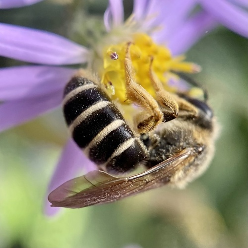
Orange-legged Furrow BeeHalictus rubicundusOsmia aff.paradisicaOsmia aff.paradisicaOsmia albolateralisOsmia albolateralisOsmia atriventrisOsmia atriventrisOsmia atrocyaneaOsmia atrocyaneaOsmia bellaOsmia bellaOsmia brevisOsmia brevisOsmia bruneriOsmia bruneriOsmia bucephalaOsmia bucephalaOsmia californicaOsmia californicaOsmia callaOsmia callaOsmia coloradensisOsmia coloradensisOsmia cyanellaOsmia cyanellaOsmia densaOsmia densaOsmia exiguaOsmia exiguaOsmia inermisOsmia inermisOsmia integraOsmia integraOsmia juxtaOsmia juxtaOsmia kincaidiiOsmia kincaidiiOsmia longulaOsmia longulaOsmia malinaOsmia malinaOsmia marginipennisOsmia marginipennisOsmia montanaOsmia montanaOsmia nanulaOsmia nanulaOsmia nigriventrisOsmia nigriventrisOsmia odontogasterOsmia odontogasterOsmia paradisicaOsmia paradisicaOsmia pentstemonisOsmia pentstemonisOsmia proximaOsmia proximaOsmia pusillaOsmia pusillaOsmia simillimaOsmia simillimaOsmia subaustralisOsmia subaustralisOsmia tersulaOsmia tersulaOsmia trevorisOsmia trevorisOsmia tristellaOsmia tristellaOxybelus emarginatusOxybelus emarginatusOxybelus uniglumisOxybelus uniglumisPacific Cuckoo BeeMelecta pacificaPanurginus atricepsPanurginus atricepsPanurginus ineptusPanurginus ineptusPemphredon inornataPemphredon inornataPerdita fallaxPerdita fallaxPerdita nevadensisPerdita nevadensisPerdita octomaculataPerdita octomaculataPerdita perpallidaPerdita perpallidaPerdita swenkiPerdita swenkiPhilanthus bilunatusPhilanthus bilunatusPhilanthus crabroniformisPhilanthus crabroniformisPhilanthus gibbosusPhilanthus gibbosusPhilanthus multimaculatusPhilanthus multimaculatusPhilanthus politusPhilanthus politusPhilanthus sanborniiPhilanthus sanborniiPhilanthus solivagusPhilanthus solivagusPhilanthus ventilabrisPhilanthus ventilabrisPodalonia robustaPodalonia robustaPrionyx atratusPrionyx atratusPrionyx canadensisPrionyx canadensisProtandrena albitarsisProtandrena albitarsisPseudopanurgus parvusPseudopanurgus parvusRed-belted Bumble BeeBombus rufocinctusRed-tailed Bumble BeeBombus sylvicolaSceliphron caementariumSceliphron caementariumSitka Bumble BeeBombus sitkensisSmall Sweat BeesLasioglossum spp.Southern Chimney BeeDiadasia australisSpeckled Cuckoo BeeMelecta separataSphecodes pecosensisSphecodes pecosensisSphex lucaeSphex lucaeSpring Cellophane BeeColletes inaequalisStelis aff.permaculataStelis aff.permaculataStelis calliphorinaStelis calliphorinaStelis coarctatusStelis coarctatusStelis foederalisStelis foederalisStelis lateralisStelis lateralisStelis monticolaStelis monticolaStelis permaculataStelis permaculataSunflower Cuckoo Nomad BeeTriepeolus helianthiSweat BeesHalictus spp.Tachytes sayiTachytes sayi Tricoloured Bumble BeeBombus ternariusTriepeolus micropygiusTriepeolus micropygiusTriepeolus obliteratusTriepeolus obliteratusTwo-ranked Bumble BeeBombus bifariusVancouver Bumble BeeBombus vancouverensisWestern Bumble BeeBombus occidentalisYellow Cuckoo Bumble BeeBombus flavidusYellow-banded Bumble BeeBombus terricolaYellow-breasted Cuckoo Nomad BeeTriepeolus paenepectoralisYellow-fronted Bumble BeeBombus flavifrons
Tricoloured Bumble BeeBombus ternariusTriepeolus micropygiusTriepeolus micropygiusTriepeolus obliteratusTriepeolus obliteratusTwo-ranked Bumble BeeBombus bifariusVancouver Bumble BeeBombus vancouverensisWestern Bumble BeeBombus occidentalisYellow Cuckoo Bumble BeeBombus flavidusYellow-banded Bumble BeeBombus terricolaYellow-breasted Cuckoo Nomad BeeTriepeolus paenepectoralisYellow-fronted Bumble BeeBombus flavifrons American Goldfinch ★Spinus tristis
American Goldfinch ★Spinus tristis Judy Gallagher, some rights reserved (CC BY)") American RobinTurdus migratoriusBaltimore OrioleIcterus galbula
American RobinTurdus migratoriusBaltimore OrioleIcterus galbula Rose Zappa, some rights reserved (CC BY), uploaded by Rose Zappa") Black-billed MagpiePica hudsonia
Black-billed MagpiePica hudsonia Blake Ross, some rights reserved (CC BY), uploaded by Blake Ross") Black-capped ChickadeePoecile atricapillus
Black-capped ChickadeePoecile atricapillus Judy Gallagher, some rights reserved (CC BY)") Blue JayCyanocitta cristata
Blue JayCyanocitta cristata Fyn Kynd, some rights reserved (CC BY-SA), uploaded by Fyn Kynd") Bohemian WaxwingBombycilla garrulusBrown ThrasherToxostoma rufumCalliope HummingbirdSelasphorus calliope
Bohemian WaxwingBombycilla garrulusBrown ThrasherToxostoma rufumCalliope HummingbirdSelasphorus calliope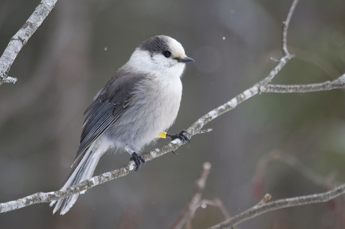
Canada JayPerisoreus canadensis Christian Back, some rights reserved (CC BY), uploaded by Christian Back") Cedar WaxwingBombycilla cedrorumCommon GrackleQuiscalus quiscula
Cedar WaxwingBombycilla cedrorumCommon GrackleQuiscalus quiscula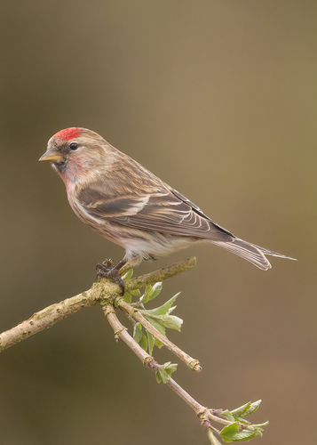
Common RedpollAcanthis flammea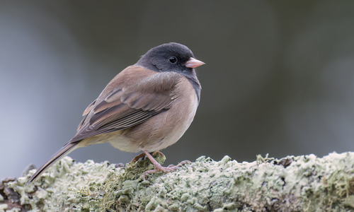
Dark-eyed JuncoJunco hyemalis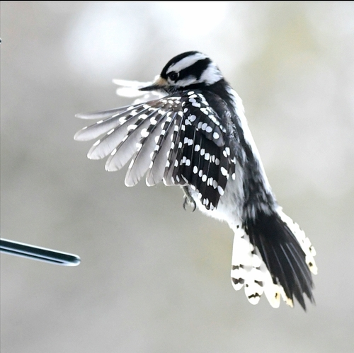
Downy WoodpeckerDryobates pubescensEastern KingbirdTyrannus tyrannusGray CatbirdDumetella carolinensis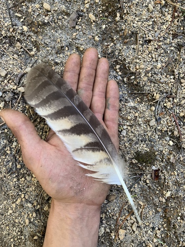
Great Horned OwlBubo virginianusMerlinFalco columbarius Jon Robson, some rights reserved (CC BY-SA), uploaded by Jon Robson") Northern FlickerColaptes auratusNorthern ShovelerAnas clypeataPine GrosbeakPinicola enucleator
Northern FlickerColaptes auratusNorthern ShovelerAnas clypeataPine GrosbeakPinicola enucleator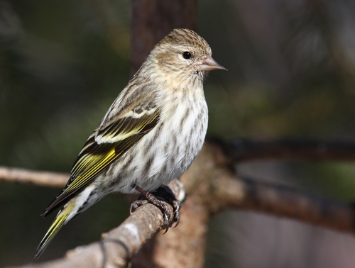
Pine SiskinSpinus pinusPurple FinchHaemorhous purpureusRed CrossbillLoxia curvirostra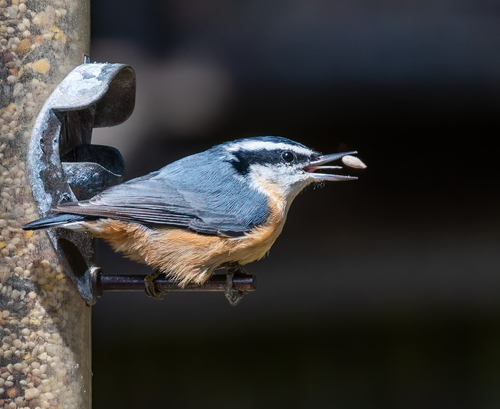
Red-breasted NuthatchSitta canadensisRed-eyed VireoVireo olivaceusRed-tailed HawkButeo jamaicensisRock PtarmiganLagopus mutaRuby-throated HummingbirdArchilochus colubris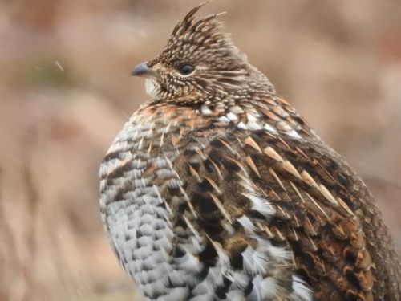
Ruffed GrouseBonasa umbellusRufous HummingbirdSelasphorus rufusSandhill CraneGrus canadensisSnow GooseAnser caerulescens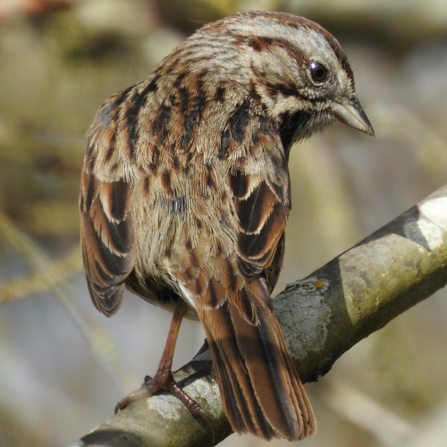
Song SparrowMelospiza melodiaSpotted TowheePipilo maculatusWarbling VireoVireo gilvusWestern TanagerPiranga ludovicianaWhite-tailed PtarmiganLagopus leucuraWhite-winged CrossbillLoxia leucopteraWillow PtarmiganLagopus lagopus Aitor, some rights reserved (CC BY), uploaded by Aitor") Yellow Warbler ★Setophaga petechiaYellow-rumped WarblerSetophaga coronataAcleris celianaAcleris celianaAcleris cornanaAcleris cornanaAcronicta fragilisAcronicta fragilisAcronicta hastaAcronicta hastaAcronicta impletaAcronicta impletaAcronicta impressaAcronicta impressaAcronicta insitaAcronicta insitaAcronicta oblinitaAcronicta oblinitaAcronicta radcliffeiAcronicta radcliffeiAcronicta vulpinaAcronicta vulpinaAdela septentrionellaAdela septentrionellaAgriades aquiloAgriades aquiloAgriphila ruricolellusAgriphila ruricolellusAgrotis ipsilonAgrotis ipsilonAgrotis venerabilisAgrotis venerabilisAlbuna pyramidalisAlbuna pyramidalisAmblyptilia picaAmblyptilia picaAmerican LadyVanessa virginiensisAmphipoea americanaAmphipoea americanaAnania funebrisAnania funebrisAnania tertialisAnania tertialisAnarta nigrolunataAnarta nigrolunataAndroloma maccullochiiAndroloma maccullochiiAnicia CheckerspotEuphydryas aniciaAnise SwallowtailPapilio zelicaonApamea inordinataApamea inordinataApamea unanimisApamea unanimisAphrodite Fritillary ★Speyeria aphroditeAphrodite FritillaryArgynnis aphroditeArcigera Flower MothSchinia arcigeraArctic FritillaryBoloria charicleaArctic SkipperCarterocephalus mandanArgynnis hydaspeArgynnis hydaspeArgynnis idaliaArgynnis idaliaArgynnis mormoniaArgynnis mormoniaArrowhead BlueGlaucopsyche piasusAspen Leaf MinerPhyllocnistis populiellaAtlantis FritillarySpeyeria atlantisAutographa californicaAutographa californicaAutographa precationisAutographa precationisBanded Tussock MothHalysidota tessellaris
Yellow Warbler ★Setophaga petechiaYellow-rumped WarblerSetophaga coronataAcleris celianaAcleris celianaAcleris cornanaAcleris cornanaAcronicta fragilisAcronicta fragilisAcronicta hastaAcronicta hastaAcronicta impletaAcronicta impletaAcronicta impressaAcronicta impressaAcronicta insitaAcronicta insitaAcronicta oblinitaAcronicta oblinitaAcronicta radcliffeiAcronicta radcliffeiAcronicta vulpinaAcronicta vulpinaAdela septentrionellaAdela septentrionellaAgriades aquiloAgriades aquiloAgriphila ruricolellusAgriphila ruricolellusAgrotis ipsilonAgrotis ipsilonAgrotis venerabilisAgrotis venerabilisAlbuna pyramidalisAlbuna pyramidalisAmblyptilia picaAmblyptilia picaAmerican LadyVanessa virginiensisAmphipoea americanaAmphipoea americanaAnania funebrisAnania funebrisAnania tertialisAnania tertialisAnarta nigrolunataAnarta nigrolunataAndroloma maccullochiiAndroloma maccullochiiAnicia CheckerspotEuphydryas aniciaAnise SwallowtailPapilio zelicaonApamea inordinataApamea inordinataApamea unanimisApamea unanimisAphrodite Fritillary ★Speyeria aphroditeAphrodite FritillaryArgynnis aphroditeArcigera Flower MothSchinia arcigeraArctic FritillaryBoloria charicleaArctic SkipperCarterocephalus mandanArgynnis hydaspeArgynnis hydaspeArgynnis idaliaArgynnis idaliaArgynnis mormoniaArgynnis mormoniaArrowhead BlueGlaucopsyche piasusAspen Leaf MinerPhyllocnistis populiellaAtlantis FritillarySpeyeria atlantisAutographa californicaAutographa californicaAutographa precationisAutographa precationisBanded Tussock MothHalysidota tessellaris Ian Manning, some rights reserved (CC BY), uploaded by Ian Manning") Big Poplar SphinxPachysphinx modestaBlack SwallowtailPapilio polyxenesBlack-and-yellow Lichen MothLycomorpha pholusBlue CopperLycaena heteroneaBoisduval's BlueIcaricia icarioidesBoloria astarteBoloria astarteBoloria epithoreBoloria epithoreBoloria freijaBoloria freijaBoloria friggaBoloria friggaBroad-lined SallowSunira bicoloragoBronze CopperTharsalea hyllusBronzed CutwormNephelodes miniansCaenurgina crassiusculaCaenurgina crassiusculaCaenurgina erechteaCaenurgina erechteaCallophrys affinisCallophrys affinisCallophrys augustinusCallophrys augustinusCallophrys dumetorumCallophrys dumetorumCallophrys eryphonCallophrys eryphonCallophrys poliosCallophrys poliosCallophrys sheridaniiCallophrys sheridaniiCallophrys spinetorumCallophrys spinetorum
Big Poplar SphinxPachysphinx modestaBlack SwallowtailPapilio polyxenesBlack-and-yellow Lichen MothLycomorpha pholusBlue CopperLycaena heteroneaBoisduval's BlueIcaricia icarioidesBoloria astarteBoloria astarteBoloria epithoreBoloria epithoreBoloria freijaBoloria freijaBoloria friggaBoloria friggaBroad-lined SallowSunira bicoloragoBronze CopperTharsalea hyllusBronzed CutwormNephelodes miniansCaenurgina crassiusculaCaenurgina crassiusculaCaenurgina erechteaCaenurgina erechteaCallophrys affinisCallophrys affinisCallophrys augustinusCallophrys augustinusCallophrys dumetorumCallophrys dumetorumCallophrys eryphonCallophrys eryphonCallophrys poliosCallophrys poliosCallophrys sheridaniiCallophrys sheridaniiCallophrys spinetorumCallophrys spinetorum Bex Goreham, some rights reserved (CC BY), uploaded by Bex Goreham") Canadian Tiger SwallowtailPapilio canadensisCarterocephalus skadaCarterocephalus skada
Canadian Tiger SwallowtailPapilio canadensisCarterocephalus skadaCarterocephalus skada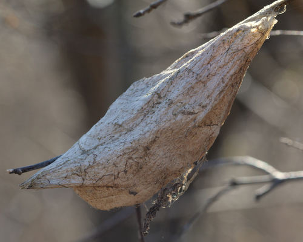
Cecropia MothHyalophora cecropiaCelery LooperAnagrapha falciferaCercyonis oetusCercyonis oetusCercyonis stheneleCercyonis stheneleChain-dotted GeometerCingilia catenariaCheckered WhitePontia protodiceChionodes viduellaChionodes viduellaChlosyne acastusChlosyne acastusChlosyne gorgoneChlosyne gorgoneChlosyne harrisiiChlosyne harrisiiChlosyne pallaChlosyne pallaChoreutis dianaChoreutis dianaChryxus ArcticOeneis chryxusCladara limitariaCladara limitaria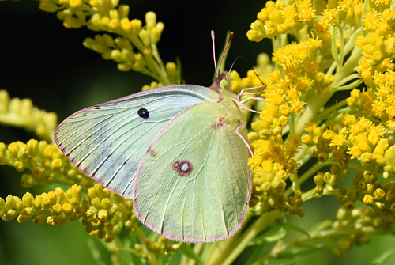
Clouded SulphurColias philodiceCoenophila opacifronsCoenophila opacifronsColias christinaColias christinaColias heclaColias heclaColias nastesColias nastesColias palaenoColias palaenoColourful ZaleZale minereaCommon Branded SkipperHesperia commaCommon Checkered-SkipperBurnsius communisCommon RingletCoenonympha tullia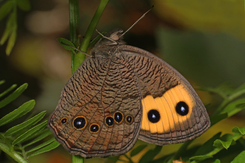
Common Wood-NymphCercyonis pegala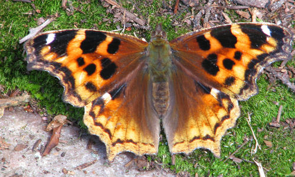
Compton TortoiseshellNymphalis l-albumComstock's SallowFeralia comstockiConfused EusarcaEusarca confusariaCoral HairstreakSatyrium titusCrambodes talidiformisCrambodes talidiformisCrambus girardellusCrambus girardellusCrambus unistriatellusCrambus unistriatellusCranberry GirdlerChrysoteuchia topiariusCucullia convexipennisCucullia convexipennisDanaus gilippusDanaus gilippusDargida diffusaDargida diffusaDatana perspicuaDatana perspicuaDejongia lobidactylusDejongia lobidactylusDelicate CycniaCycnia teneraDiachrysia aereoidesDiachrysia aereoidesDingy CutwormFeltia jaculiferaDiploschizia impigritellaDiploschizia impigritellaDot-and-dash Swordgrass MothXylena curvimaculaDrasteria hudsonicaDrasteria hudsonicaDrasteria petricolaDrasteria petricolaDysstroma citrataDysstroma citrataEastern Pine ElfinCallophrys niphonEastern Tailed-BlueCupido comyntasEctoedemia populellaEctoedemia populellaEight-spotted ForesterAlypia octomaculataElophila icciusalisElophila icciusalisEnargia faustaEnargia faustaErebia discoidalisErebia discoidalisErebia epipsodeaErebia epipsodeaErebia vidleriErebia vidleriErynnis afraniusErynnis afraniusErynnis brizoErynnis brizoErynnis icelusErynnis icelusErynnis juvenalisErynnis juvenalisErynnis pacuviusErynnis pacuviusErynnis persiusErynnis persiusErynnis propertiusErynnis propertiusEuchlaena marginariaEuchlaena marginariaEuclidia arditaEuclidia arditaEuclidia cuspideaEuclidia cuspideaEuphilotes battoidesEuphilotes battoidesEuphydryas chalcedonaEuphydryas chalcedonaEuphydryas colonEuphydryas colonEuphydryas edithaEuphydryas edithaEuphydryas gillettiiEuphydryas gillettiiEuphyia intermediataEuphyia intermediataEuplexia benesimilisEuplexia benesimilisEupsilia tristigmataEupsilia tristigmataEuxoa auxiliarisEuxoa auxiliarisEuxoa catenulaEuxoa catenulaEuxoa detersaEuxoa detersaFall WebwormHyphantria cuneaFeltia herilisFeltia herilisField CrescentPhyciodes pulchellaForest Tent CaterpillarMalacosoma disstriaGarita SkipperlingOarisma garitaGesneria centuriellaGesneria centuriellaGnophaela clappianaGnophaela clappianaGnophaela latipennisGnophaela latipennisGnorimoschema octomaculellaGnorimoschema octomaculellaGoldenrod Gall MothEpiblema scudderianaGraphiphora augurGraphiphora augurGray HairstreakStrymon melinusGreat Spangled FritillarySpeyeria cybeleGreenish BlueIcaricia saepiolusHeliothis phloxiphagaHeliothis phloxiphagaHemaris gracilisHemaris gracilisHemaris thetisHemaris thetisHerald MothScoliopteryx libatrixHerpetogramma abdominalisHerpetogramma abdominalisHerpetogramma aquilonalisHerpetogramma aquilonalisHerpetogramma thestealisHerpetogramma thestealisHesperia dacotaeHesperia dacotaeHesperia jubaHesperia jubaHesperia uncasHesperia uncasHimmelman's Plume MothGeina tenuidactylusHobomok SkipperLon hobomokHummingbird Clearwing MothHemaris thysbeHyles galliiHyles galliiHypena humuliHypena humuliHypena scabraHypena scabraIsabella Tiger MothPyrrharctia isabellaJack Pine BudwormChoristoneura pinusJulia OrangetipAnthocharis juliaLacinipolia renigeraLacinipolia renigeraLarge MarbleEuchloe ausonidesLeucoptera pachystimellaLeucoptera pachystimellaLilac BorerPodosesia syringaeLimenitis lorquiniLimenitis lorquiniLithophane bethuneiLithophane bethuneiLithophane faginaLithophane faginaLittle White Lichen MothClemensia albataLobophora nivigerataLobophora nivigerataLomographa semiclarataLomographa semiclarataLomographa vestaliataLomographa vestaliataLucerne MothNomophila nearcticaLustrous CopperLycaena cupreusMacaria truncatariaMacaria truncatariaMaple LeafcutterParaclemensia acerifoliellaMarmara oregonensisMarmara oregonensisMeadow FritillaryBoloria bellonaMelanchra assimilisMelanchra assimilisMelissa ArcticOeneis melissaMelissa BluePlebejus melissaMesoleuca gratulataMesoleuca gratulataMesoleuca ruficillataMesoleuca ruficillata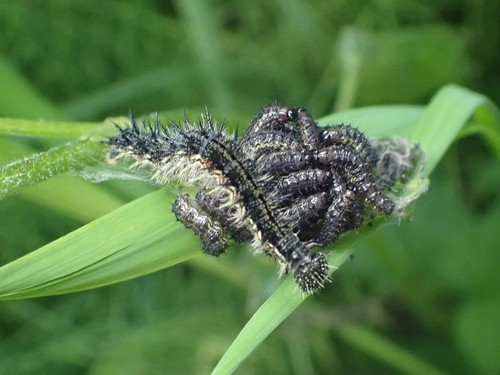
Milbert's Tortoiseshell ★Aglais milbertiMint Root BorerFumibotys fumalisMompha raschkiellaMompha raschkiellaMompha unifasciellaMompha unifasciella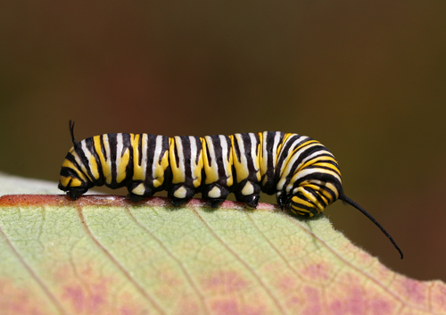
Monarch ★Danaus plexippusMormon Fritillary ★Speyeria mormoniaMorning-glory Plume MothEmmelina monodactylaMourning CloakNymphalis antiopaMustard WhitePieris oleraceaMylitta CrescentPhyciodes mylittaNeophasia menapiaNeophasia menapiaNevada BuckmothHemileuca nevadensisNorthern AzureCelastrina luciaNorthern CrescentPhyciodes cocytaNorthern MarbleEuchloe creusaNycteola cinereanaNycteola cinereanaOblique-banded LeafrollerChoristoneura rosaceana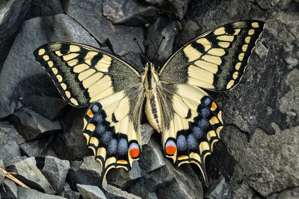
Old World Swallowtail ★Papilio machaonOlympia MarbleEuchloe olympiaOrange SulphurColias eurytheme Painted LadyVanessa carduiPale SwallowtailPapilio eurymedonPalthis angulalisPalthis angulalisPaonias myopsPaonias myopsParaleucoptera albellaParaleucoptera albellaParnassius clodiusParnassius clodiusParnassius smintheusParnassius smintheusPearl CrescentPhyciodes tharosPeck's SkipperPolites peckiusPhalaenophana pyramusalisPhalaenophana pyramusalisPholisora catullusPholisora catullusPhyllonorycter anderidaePhyllonorycter anderidaePhyllonorycter apparellaPhyllonorycter apparellaPhyllonorycter ledellaPhyllonorycter ledellaPhyllonorycter nipigonPhyllonorycter nipigonPieris angelikaPieris angelikaPieris marginalisPieris marginalisPieris napiPieris napiPine Needle SheathminerZelleria haimbachiPink-edged SulphurColias interiorPink-patched LooperEosphoropteryx thyatyroidesPlebejus annaPlebejus annaPlebejus idasPlebejus idasPlebejus saepiolusPlebejus saepiolusPolia purpurissataPolia purpurissataPolice Car MothGnophaela vermiculataPolygonia faunusPolygonia faunusPolygonia gracilisPolygonia gracilisPolygonia interrogationisPolygonia interrogationisPolygonia prognePolygonia prognePolygonia satyrusPolygonia satyrusPolygonia zephyrusPolygonia zephyrus
Painted LadyVanessa carduiPale SwallowtailPapilio eurymedonPalthis angulalisPalthis angulalisPaonias myopsPaonias myopsParaleucoptera albellaParaleucoptera albellaParnassius clodiusParnassius clodiusParnassius smintheusParnassius smintheusPearl CrescentPhyciodes tharosPeck's SkipperPolites peckiusPhalaenophana pyramusalisPhalaenophana pyramusalisPholisora catullusPholisora catullusPhyllonorycter anderidaePhyllonorycter anderidaePhyllonorycter apparellaPhyllonorycter apparellaPhyllonorycter ledellaPhyllonorycter ledellaPhyllonorycter nipigonPhyllonorycter nipigonPieris angelikaPieris angelikaPieris marginalisPieris marginalisPieris napiPieris napiPine Needle SheathminerZelleria haimbachiPink-edged SulphurColias interiorPink-patched LooperEosphoropteryx thyatyroidesPlebejus annaPlebejus annaPlebejus idasPlebejus idasPlebejus saepiolusPlebejus saepiolusPolia purpurissataPolia purpurissataPolice Car MothGnophaela vermiculataPolygonia faunusPolygonia faunusPolygonia gracilisPolygonia gracilisPolygonia interrogationisPolygonia interrogationisPolygonia prognePolygonia prognePolygonia satyrusPolygonia satyrusPolygonia zephyrusPolygonia zephyrus Trevor Van Loon, some rights reserved (CC BY), uploaded by Trevor Van Loon") Polyphemus MothAntheraea polyphemusPonometia candefactaPonometia candefactaProchoerodes lineolaProchoerodes lineolaPseudanarta flavaPseudanarta flavaPseudohermonassa bicarneaPseudohermonassa bicarneaPurple-backed CabbagewormEvergestis pallidataPurplish CopperTharsalea helloidesPyrausta orphisalisPyrausta orphisalisPyrausta subsequalisPyrausta subsequalisPyrgus centaureaePyrgus centaureaePyrgus ruralisPyrgus ruralisRaspberry Crown BorerPennisetia marginatum
Polyphemus MothAntheraea polyphemusPonometia candefactaPonometia candefactaProchoerodes lineolaProchoerodes lineolaPseudanarta flavaPseudanarta flavaPseudohermonassa bicarneaPseudohermonassa bicarneaPurple-backed CabbagewormEvergestis pallidataPurplish CopperTharsalea helloidesPyrausta orphisalisPyrausta orphisalisPyrausta subsequalisPyrausta subsequalisPyrgus centaureaePyrgus centaureaePyrgus ruralisPyrgus ruralisRaspberry Crown BorerPennisetia marginatum Gilles San Martin, some rights reserved (CC BY-SA), uploaded by Gilles San Martin") Red Admiral ★Vanessa atalantaRed-humped CaterpillarSchizura concinnaRenia flavipunctalisRenia flavipunctalisRivula propinqualisRivula propinqualisSaddleback LooperEctropis crepusculariaSalt Marsh MothEstigmene acreaSatyrium acadicaSatyrium acadicaSatyrium behriiSatyrium behriiSatyrium calanusSatyrium calanusSatyrium californicaSatyrium californicaSatyrium edwardsiiSatyrium edwardsiiSatyrium liparopsSatyrium liparopsSatyrium saepiumSatyrium saepiumSatyrium sylvinusSatyrium sylvinusSaucrobotys futilalisSaucrobotys futilalisScallop ShellHydria undulataScalloped SallowEucirroedia pampinaSchinia floridaSchinia floridaSchinia gauraeSchinia gauraeSchinia persimilisSchinia persimilisSchinia walsinghamiSchinia walsinghamiScopula junctariaScopula junctariaSemioscopis inornataSemioscopis inornata
Red Admiral ★Vanessa atalantaRed-humped CaterpillarSchizura concinnaRenia flavipunctalisRenia flavipunctalisRivula propinqualisRivula propinqualisSaddleback LooperEctropis crepusculariaSalt Marsh MothEstigmene acreaSatyrium acadicaSatyrium acadicaSatyrium behriiSatyrium behriiSatyrium calanusSatyrium calanusSatyrium californicaSatyrium californicaSatyrium edwardsiiSatyrium edwardsiiSatyrium liparopsSatyrium liparopsSatyrium saepiumSatyrium saepiumSatyrium sylvinusSatyrium sylvinusSaucrobotys futilalisSaucrobotys futilalisScallop ShellHydria undulataScalloped SallowEucirroedia pampinaSchinia floridaSchinia floridaSchinia gauraeSchinia gauraeSchinia persimilisSchinia persimilisSchinia walsinghamiSchinia walsinghamiScopula junctariaScopula junctariaSemioscopis inornataSemioscopis inornata christine123, some rights reserved (CC BY), uploaded by christine123") Silver-spotted SkipperEpargyreus clarus
Silver-spotted SkipperEpargyreus clarus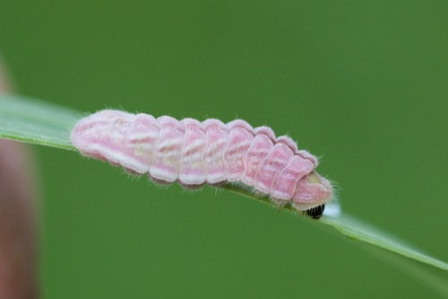
Silvery BlueGlaucopsyche lygdamus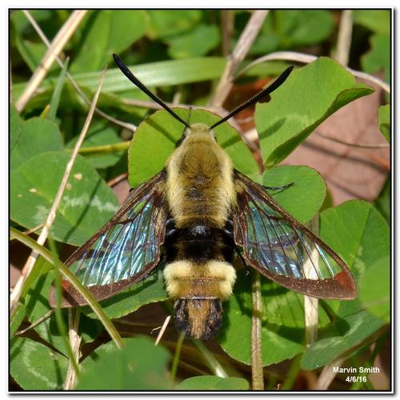
Snowberry Clearwing ★Hemaris diffinisSpear-marked Black MothRheumaptera hastataSpeckled Green FruitwormOrthosia hibisciSpeyeria adiasteSpeyeria adiasteSpeyeria callippeSpeyeria callippeSpeyeria edwardsiiSpeyeria edwardsiiSpeyeria hesperisSpeyeria hesperisSpeyeria zereneSpeyeria zerene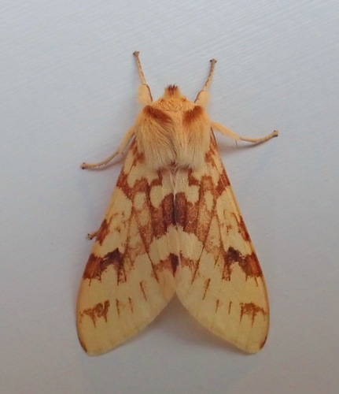
Spotted Tussock MothLophocampa maculataSpring AzureCelastrina ladonSpruce BudwormChoristoneura fumiferanaStigmella populetorumStigmella populetorumSummer AzureCelastrina neglectaSunflower MothHomoeosoma electellaSweetheart UnderwingCatocala concumbensSynanthedon albicornisSynanthedon albicornisSynanthedon bibionipennisSynanthedon bibionipennisSynanthedon exitiosaSynanthedon exitiosaSynanthedon pictipesSynanthedon pictipesSynanthedon polygoniSynanthedon polygoniSyngrapha epigaeaSyngrapha epigaeaTawny CrescentPhyciodes batesiiTawny-edged SkipperPolites themistoclesTetracis cachexiataTetracis cachexiataTharsalea dioneTharsalea dioneTharsalea dorcasTharsalea dorcasTharsalea edithaTharsalea edithaTharsalea heteroneaTharsalea heteroneaTharsalea mariposaTharsalea mariposaTharsalea nivalisTharsalea nivalisTharsalea rubidusTharsalea rubidusThe LaugherCharadra deridensTrichodezia albovittataTrichodezia albovittata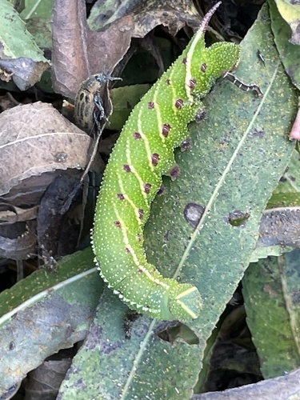
Twin-spotted SphinxSmerinthus jamaicensisUdea rubigalisUdea rubigalisUglynest CaterpillarArchips cerasivoranaUhler's ArcticOeneis uhleriVariegated FritillaryEuptoieta claudiaViceroyLimenitis archippusVirginia CtenuchaCtenucha virginicaVirginia Tiger MothSpilosoma virginicaWaved SphinxCeratomia undulosaWavy-lined EmeraldSynchlora aerataWestern Poplar ClearwingParanthrene robiniae Matt Benotsch, some rights reserved (CC BY), uploaded by Matt Benotsch") Western Tailed-BlueCupido amyntulaWestern Tent CaterpillarMalacosoma californica
Western Tailed-BlueCupido amyntulaWestern Tent CaterpillarMalacosoma californica Don Loarie, some rights reserved (CC BY), uploaded by Don Loarie") Western Tiger SwallowtailPapilio rutulusWestern WhitePontia occidentalisWhite AdmiralLimenitis arthemisWhite-banded Toothed CarpetEpirrhoe alternata
Western Tiger SwallowtailPapilio rutulusWestern WhitePontia occidentalisWhite AdmiralLimenitis arthemisWhite-banded Toothed CarpetEpirrhoe alternata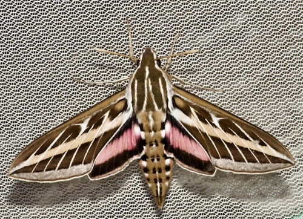
White-lined SphinxHyles lineataWhite-marked Tussock MothOrgyia leucostigmaWoodland SkipperOchlodes sylvanoidesXestia c-nigrumXestia c-nigrumXestia normanianaXestia normanianaXestia smithiiXestia smithiiYarrow Plume MothGillmeria pallidactylaYellow-collared Scape MothCisseps fulvicollisZanclognatha jacchusalisZanclognatha jacchusalis Don Loarie, some rights reserved (CC BY), uploaded by Don Loarie") Deer MousePeromyscus maniculatus
Deer MousePeromyscus maniculatus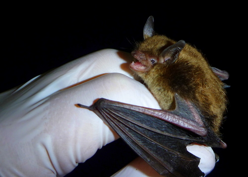
Little Brown BatMyotis lucifugus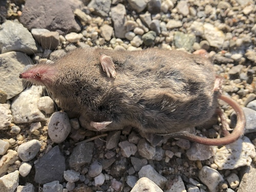
Masked ShrewSorex cinereusMeadow VoleMicrotus pennsylvanicusSilver-haired BatLasionycteris noctivagans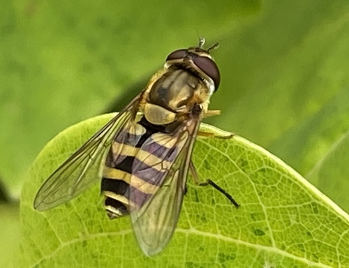
A Flower FlySyrphus ribesiiAdejeania vexatrixAdejeania vexatrixAdelphocoris rapidusAdelphocoris rapidusAerial YellowjacketDolichovespula arenariaAgeniella acceptaAgeniella acceptaAgromyza pseudoreptansAgromyza pseudoreptansAgromyza vockerothiAgromyza vockerothiAllograpta obliquaAllograpta obliquaAlydus pilosulusAlydus pilosulusAmphigonalia gothicaAmphigonalia gothicaAnasimyia bilinearisAnasimyia bilinearisAnastoechus barbatusAnastoechus barbatusAnastrangalia laetificaAnastrangalia laetificaAncistrocerus adiabatusAncistrocerus adiabatusAncistrocerus catskillAncistrocerus catskillAnisosticta bitriangularisAnisosticta bitriangularisAnoplius virginiensisAnoplius virginiensisAnthaxia inornataAnthaxia inornataAntherophagus ochraceusAntherophagus ochraceusAnthrax irroratusAnthrax irroratusArctic YellowjacketDolichovespula arcticaAsemosyrphus polygrammusAsemosyrphus polygrammusAsteromyia carboniferaAsteromyia carboniferaAsteromyia modestaAsteromyia modestaAtrichopogon fusculusAtrichopogon fusculusAulagromyza cornigeraAulagromyza cornigeraBaccha cognataBaccha cognataBald-faced HornetDolichovespula maculataBatyle ignicollisBatyle ignicollisBatyle suturalisBatyle suturalisBellamira scalarisBellamira scalarisBibio albipennisBibio albipennisBlack FireflyLucidota atraBlack-horned Tree CricketOecanthus nigricornisBlack-shouldered Drone FlyEristalis dimidiataBlaesodiplosis crataegifoliaBlaesodiplosis crataegifoliaBlaesoxipha hunteriBlaesoxipha hunteriBlera confusaBlera confusaBlera nigraBlera nigraBlueberry Stem Gall WaspHemadas nubilipennisBombylius pulchellusBombylius pulchellusBombylius pygmaeusBombylius pygmaeusBotanophila fugaxBotanophila fugaxBoxelder BugBoisea trivittataBrachiacantha ursinaBrachiacantha ursinaBrachyopa notataBrachyopa notataBrachysomida nigripennisBrachysomida nigripennisBracon atratorBracon atratorBromius obscurusBromius obscurusBronze Birch BorerAgrilus anxiusBuprestis nutalliBuprestis nutalli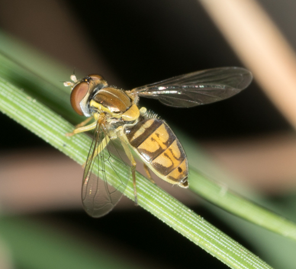
Calligrapher FlyToxomerus marginatusCalliphora vomitoriaCalliphora vomitoriaCampiglossa albicepsCampiglossa albicepsCampiglossa picciolaCampiglossa picciolaCandy-striped LeafhopperGraphocephala coccineaChaitophorus populicolaChaitophorus populicolaChaitophorus populifoliiChaitophorus populifoliiChalcosyrphus curvariaChalcosyrphus curvariaChalcosyrphus nemorumChalcosyrphus nemorumChalcosyrphus pigerChalcosyrphus pigerChalcosyrphus vecorsChalcosyrphus vecorsCheilosia latransCheilosia latrans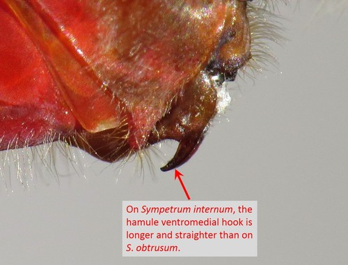
Cherry-faced MeadowhawkSympetrum internumChirosia betuletiChirosia betuletiChrysis irisChrysis irisChrysops sackeniChrysops sackeniClastoptera proteusClastoptera proteusClusia lateralisClusia lateralisClytus ruricolaClytus ruricolaCobalt Milkweed BeetleChrysochus cobaltinus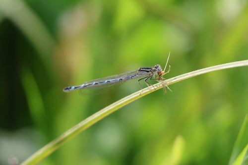
Common Blue DamselflyEnallagma cyathigerum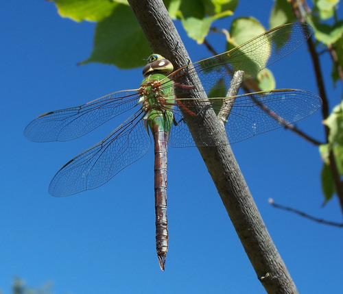
Common Green DarnerAnax juniusConocephalus saltansConocephalus saltansConophorus columbiensisConophorus columbiensisConophorus sackeniiConophorus sackeniiContarinia virginianiaeContarinia virginianiaeConura torvinaConura torvinaConvergent Lady BeetleHippodamia convergensCooley Spruce Gall AdelgidAdelges cooleyiCopestylum comstockiCopestylum comstockiCopestylum saturCopestylum saturCopestylum vittatumCopestylum vittatumCorimelaena pulicariaCorimelaena pulicariaCortodera longicornisCortodera longicornisCortodera subpilosaCortodera subpilosaCorythucha cydoniaeCorythucha cydoniaeCorythucha morrilliCorythucha morrilliCosmopepla lintnerianaCosmopepla lintnerianaCream-spotted Lady BeetleCalvia quatuordecimguttataCrossidius coralinusCrossidius coralinusCrossidius discoideusCrossidius discoideusCrossidius pulchellusCrossidius pulchellusCuerna alpinaCuerna alpinaCynomya cadaverinaCynomya cadaverinaCyrtophorus verrucosusCyrtophorus verrucosusDasineura epilobiiDasineura epilobiiDasineura folliculiDasineura folliculiDasysyrphus venustusDasysyrphus venustusDiabrotica virgiferaDiabrotica virgiferaDiastrophus turgidusDiastrophus turgidusDicerca tenebricaDicerca tenebricaDicerca tenebrosaDicerca tenebrosaDichelonyx backiiDichelonyx backiiDioxyna picciolaDioxyna picciolaDiplolepis bassettiDiplolepis bassettiDiplolepis bicolorDiplolepis bicolorDogbane BeetleChrysochus auratusDolerus aprilisDolerus aprilisDolichovespula albidaDolichovespula albidaDolichovespula norvegicoidesDolichovespula norvegicoides Drepanostoma, some rights reserved (CC BY), uploaded by Drepanostoma") Drone FlyEristalis tenaxEastern CalligrapherToxomerus geminatusElm SawflyCimbex americanaEnchenopa latipesEnchenopa latipesEpalpus signiferEpalpus signiferEpicauta ferrugineaEpicauta ferrugineaEpicauta pensylvanicaEpicauta pensylvanicaEpicauta puncticollisEpicauta puncticollisEpicauta sericansEpicauta sericansEpistrophe emarginataEpistrophe emarginataEpistrophe grossulariaeEpistrophe grossulariaeEpistrophe xanthostomaEpistrophe xanthostomaEpistrophella emarginataEpistrophella emarginataEpuraea aestivaEpuraea aestivaEpuraea truncatellaEpuraea truncatellaEristalis anthophorinaEristalis anthophorinaEristalis flavipesEristalis flavipesEristalis hirtaEristalis hirtaEristalis obscuraEristalis obscuraEristalis stipatorEristalis stipatorEtorofus obliteratusEtorofus obliteratusEuaresta aequalisEuaresta aequalisEuhexomyza schineriEuhexomyza schineriEumea caesarEumea caesarEumenes cruciferaEumenes cruciferaEuodynerus annulatusEuodynerus annulatusEuodynerus foraminatusEuodynerus foraminatusEuodynerus hidalgoEuodynerus hidalgoEuodynerus pratensisEuodynerus pratensisEupeodes americanusEupeodes americanusEupeodes fumipennisEupeodes fumipennisEupeodes latifasciatusEupeodes latifasciatusEupeodes perplexusEupeodes perplexusEupeodes snowiEupeodes snowiEupeodes volucrisEupeodes volucrisEurimyia stipatusEurimyia stipatusEusphalerum pothosEusphalerum pothosEutreta dianaEutreta dianaEvagetes parvusEvagetes parvusEvodinus monticolaEvodinus monticolaExoprosopa decoraExoprosopa decoraExoprosopa dorcadionExoprosopa dorcadionExoprosopa dorisExoprosopa dorisExoprosopa eremitaExoprosopa eremitaExoprosopa fascipennisExoprosopa fascipennisExorista mellaExorista mellaFork-tailed Bush KatydidScudderia furcataFormica fuscaFormica fuscaFormica obscuripesFormica obscuripesFormica obtusopilosaFormica obtusopilosa
Drone FlyEristalis tenaxEastern CalligrapherToxomerus geminatusElm SawflyCimbex americanaEnchenopa latipesEnchenopa latipesEpalpus signiferEpalpus signiferEpicauta ferrugineaEpicauta ferrugineaEpicauta pensylvanicaEpicauta pensylvanicaEpicauta puncticollisEpicauta puncticollisEpicauta sericansEpicauta sericansEpistrophe emarginataEpistrophe emarginataEpistrophe grossulariaeEpistrophe grossulariaeEpistrophe xanthostomaEpistrophe xanthostomaEpistrophella emarginataEpistrophella emarginataEpuraea aestivaEpuraea aestivaEpuraea truncatellaEpuraea truncatellaEristalis anthophorinaEristalis anthophorinaEristalis flavipesEristalis flavipesEristalis hirtaEristalis hirtaEristalis obscuraEristalis obscuraEristalis stipatorEristalis stipatorEtorofus obliteratusEtorofus obliteratusEuaresta aequalisEuaresta aequalisEuhexomyza schineriEuhexomyza schineriEumea caesarEumea caesarEumenes cruciferaEumenes cruciferaEuodynerus annulatusEuodynerus annulatusEuodynerus foraminatusEuodynerus foraminatusEuodynerus hidalgoEuodynerus hidalgoEuodynerus pratensisEuodynerus pratensisEupeodes americanusEupeodes americanusEupeodes fumipennisEupeodes fumipennisEupeodes latifasciatusEupeodes latifasciatusEupeodes perplexusEupeodes perplexusEupeodes snowiEupeodes snowiEupeodes volucrisEupeodes volucrisEurimyia stipatusEurimyia stipatusEusphalerum pothosEusphalerum pothosEutreta dianaEutreta dianaEvagetes parvusEvagetes parvusEvodinus monticolaEvodinus monticolaExoprosopa decoraExoprosopa decoraExoprosopa dorcadionExoprosopa dorcadionExoprosopa dorisExoprosopa dorisExoprosopa eremitaExoprosopa eremitaExoprosopa fascipennisExoprosopa fascipennisExorista mellaExorista mellaFork-tailed Bush KatydidScudderia furcataFormica fuscaFormica fuscaFormica obscuripesFormica obscuripesFormica obtusopilosaFormica obtusopilosa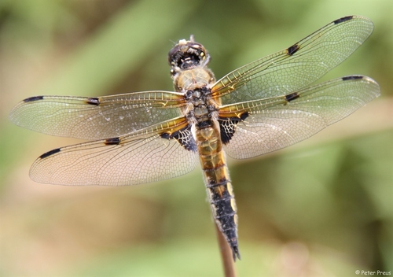
Four-spotted SkimmerLibellula quadrimaculataFrankliniella triticiFrankliniella triticiGnathacmaeops pratensisGnathacmaeops pratensisGolden-eyed LacewingChrysopa oculataGolden-haired Flower LonghornLepturobosca chrysocomaGoldenrod Gall FlyEurosta solidaginisGoldenrod Leaf MinerMicrorhopala vittata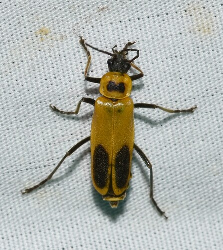
Goldenrod Soldier BeetleChauliognathus pensylvanicusGrammoptera subargentataGrammoptera subargentataGreen LacewingChrysoperla carneaHammerschmidtia rufaHammerschmidtia rufaHarmostes reflexulusHarmostes reflexulusHedriodiscus binotatusHedriodiscus binotatusHelina evectaHelina evectaHelophilus fasciatusHelophilus fasciatusHelophilus hybridusHelophilus hybridusHelophilus lapponicusHelophilus lapponicusHelophilus latifronsHelophilus latifronsHemipenthes morioidesHemipenthes morioidesHeterogaster behrensiiHeterogaster behrensiiHolopyga ventralisHolopyga ventralisHyperaspis undulataHyperaspis undulataHystricia abruptaHystricia abruptaJanus abbreviatusJanus abbreviatusJudolia instabilisJudolia instabilisJudolia montivagansJudolia montivagansLabour Day AntLasius neonigerLapposyrphus aberrantisLapposyrphus aberrantisLapposyrphus lapponicusLapposyrphus lapponicusLarch Spruce Gall AdelgidAdelges lariciatusLarge Bee FlyBombylius majorLebia viridisLebia viridisLeucospis affinisLeucospis affinisLeucozona americanaLeucozona americanaLimnophora naronaLimnophora naronaLiriomyza eupatoriiLiriomyza eupatoriiLiriomyza galiivoraLiriomyza galiivoraLispe uliginosaLispe uliginosaLopidea instabilisLopidea instabilisLucilia illustrisLucilia illustrisLucilia silvarumLucilia silvarumLupine AphidMacrosiphum albifronsLygaeus kalmiiLygaeus kalmiiLygus rufidorsusLygus rufidorsusMallota bautiasMallota bautiasMallota posticataMallota posticataMargined Carrion BeetleOiceoptoma noveboracenseMegacyllene robiniaeMegacyllene robiniaeMegasyrphus laxusMegasyrphus laxusMelangyna lasiophthalmaMelangyna lasiophthalmaMelanoplus bivittatusMelanoplus bivittatusMelanoplus femurrubrumMelanoplus femurrubrumMelanoplus infantilisMelanoplus infantilisMelanostoma mellinaMelanostoma mellinaMeliscaeva cinctellaMeliscaeva cinctellaMesembrina latreilliiMesembrina latreilliiMetallus capitalisMetallus capitalisMicrodon cothurnatusMicrodon cothurnatusMolorchus bimaculatusMolorchus bimaculatusMordellina pustulataMordellina pustulataMordellistena cervicalisMordellistena cervicalisMordellistena ornataMordellistena ornataMorellia micansMorellia micansMyopa clausaMyopa clausaMyospila meditabundaMyospila meditabundaNeorhynchocephalus sackeniiNeorhynchocephalus sackeniiNeurocolpus nubilusNeurocolpus nubilusNew York Carpenter AntCamponotus novaeboracensisNine-spotted Lady BeetleCoccinella novemnotataNorthern Paper WaspPolistes fuscatusOdynerus dilectusOdynerus dilectusOecanthus californicusOecanthus californicusOkanagana bellaOkanagana bellaOrnate Checkered BeetleTrichodes ornatusOrsodacne atraOrsodacne atraOrthonevra pulchellaOrthonevra pulchellaPachypappa sacculiPachypappa sacculiParagus haemorrhousParagus haemorrhousParasyrphus relictusParasyrphus relictusParavilla separataParavilla separataParenthesis Lady BeetleHippodamia parenthesisParhelophilus laetusParhelophilus laetusParhelophilus obsoletusParhelophilus obsoletusParhelophilus rexParhelophilus rexPeleteria anaxiasPeleteria anaxiasPentaria trifasciataPentaria trifasciataPhaonia servaPhaonia servaPhasia robertsoniiPhasia robertsoniiPhormia reginaPhormia reginaPhysocephala burgessiPhysocephala burgessiPhysocephala furcillataPhysocephala furcillataPhysocephala texanaPhysocephala texanaPhysocephala tibialisPhysocephala tibialisPhysoconops obscuripennisPhysoconops obscuripennisPhytomyza agromyzinaPhytomyza agromyzinaPidonia scriptaPidonia scriptaPigeon HorntailTremex columbaPimpla pedalisPimpla pedalisPine Needle ScaleChionaspis pinifoliaePipiza femoralisPipiza femoralisPipiza quadrimaculataPipiza quadrimaculataPlagiognathus obscurusPlagiognathus obscurusPlateumaris nitidaPlateumaris nitidaPlateumaris shoemakeriPlateumaris shoemakeriPlatycheirus rosarumPlatycheirus rosarumPlatycheirus stegnusPlatycheirus stegnusPoecilanthrax tegminipennisPoecilanthrax tegminipennisPoecilognathus sulphureusPoecilognathus sulphureusPolistes auriferPolistes auriferPolydontomyia curvipesPolydontomyia curvipesPonana pectoralisPonana pectoralisPoplar Gall BorerSaperda populneaPoplar Vagabond Gall AphidMordwilkoja vagabundaPseudepipona aldrichiPseudepipona aldrichiPseudogaurotina cressoniPseudogaurotina cressoniPseudomasaris vespoidesPseudomasaris vespoidesPterocheilus quinquefasciatusPterocheilus quinquefasciatusRabdophaga rigidaeRabdophaga rigidaeRabdophaga salicisbrassicoidesRabdophaga salicisbrassicoidesRabdophaga strobiloidesRabdophaga strobiloidesRaspberry FruitwormByturus unicolorRed-shouldered Pine BorerStictoleptura canadensisRhingia nasicaRhingia nasicaRhopalomyia capitataRhopalomyia capitataRhopalomyia chrysothamniRhopalomyia chrysothamniRhopalomyia medusaRhopalomyia medusaRhopalomyia medusirrasaRhopalomyia medusirrasaRhopalomyia obovataRhopalomyia obovataRhopalomyia pomumRhopalomyia pomumRhopalomyia utahensisRhopalomyia utahensisSarcophaga nearcticaSarcophaga nearcticaSarcophaga sinuataSarcophaga sinuataScaeva affinisScaeva affinisScathophaga furcataScathophaga furcataScelolyperus varipesScelolyperus varipesSenotainia trilineataSenotainia trilineataSericomyia chalcopygaSericomyia chalcopygaSericomyia lataSericomyia lataSericomyia militarisSericomyia militarisSericomyia transversaSericomyia transversaSphaerophoria contiguaSphaerophoria contiguaSphaerophoria sulphuripesSphaerophoria sulphuripesSphecomyia pattoniiSphecomyia pattoniiSphecomyia vittataSphecomyia vittataSphenometopa tergataSphenometopa tergataSpilomyia sayiSpilomyia sayiSpiny Rose Gall WaspDiplolepis spinosaSpotted Cucumber BeetleDiabrotica undecimpunctataStratiomys badiaStratiomys badiaStratiomys normulaStratiomys normulaStrongygaster trianguliferaStrongygaster trianguliferaSumac Flea BeetleBlepharida rhoisSymmorphus albomarginatusSymmorphus albomarginatusSymmorphus canadensisSymmorphus canadensisSymmorphus cristatusSymmorphus cristatusSyrphus opinatorSyrphus opinatorSyrphus rectusSyrphus rectusSyrphus torvusSyrphus torvusSyrphus vitripennisSyrphus vitripennisSystoechus oreasSystoechus oreasSystoechus vulgarisSystoechus vulgarisTamalia coweniTamalia coweniTapinoma sessileTapinoma sessileTarnished Plant BugLygus lineolarisTemnostoma alternansTemnostoma alternansTemnostoma venustumTemnostoma venustumTerellia occidentalisTerellia occidentalisThamnotettix confinisThamnotettix confinisThecabius populimonilisThecabius populimonilisThree-banded Lady BeetleCoccinella trifasciataToxomerus occidentalisToxomerus occidentalisTrachysida asperaTrachysida asperaTrachysida mutabilisTrachysida mutabilisTransverse Lady BeetleCoccinella transversoguttataTrichiotinus assimilisTrichiotinus assimilisTrichopsomyia apisaonTrichopsomyia apisaonTritoxa flexaTritoxa flexaTropidia quadrataTropidia quadrataTwo-spotted Lady BeetleAdalia bipunctataUrocerus flavicornisUrocerus flavicornisVespula acadicaVespula acadicaVespula alascensisVespula alascensisVespula atropilosaVespula atropilosaVespula consobrinaVespula consobrinaVespula flavopilosaVespula flavopilosaVespula germanicaVespula germanicaVespula maculifronsVespula maculifronsVespula pensylvanicaVespula pensylvanicaVilla alternataVilla alternataVilla fulvianaVilla fulvianaVilla hypomelasVilla hypomelasVilla lateralisVilla lateralisVolucella bombylansVolucella bombylansVolucella facialisVolucella facialisWestern Horse FlyTabanus punctiferWinter FireflyEllychnia corruscaWoodland Ground BeetlesPterostichus spp.Woolly Alder AphidProciphilus tessellatusXestoleptura crassipesXestoleptura crassipesXestoleptura tibialisXestoleptura tibialisXylota flavitibiaXylota flavitibiaYellow Dung FlyScathophaga stercorariaZaira georgiaeZaira georgiaeZonitis sayiZonitis sayiNo animal matches all of those. Try removing a filter.